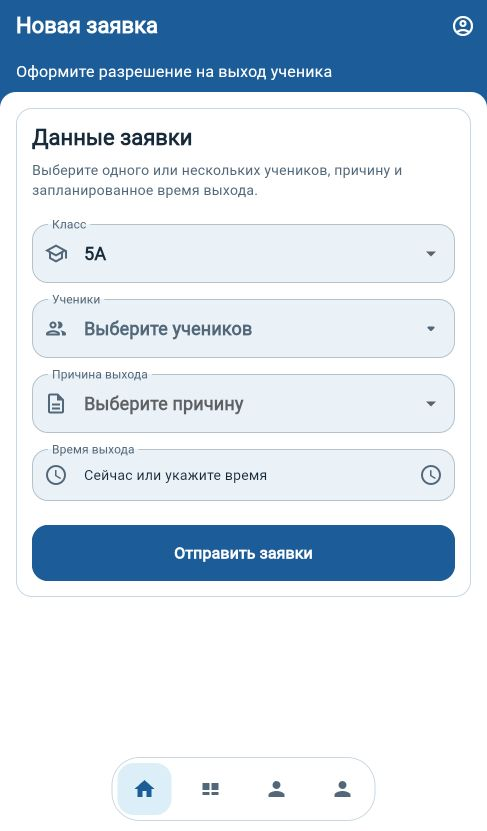
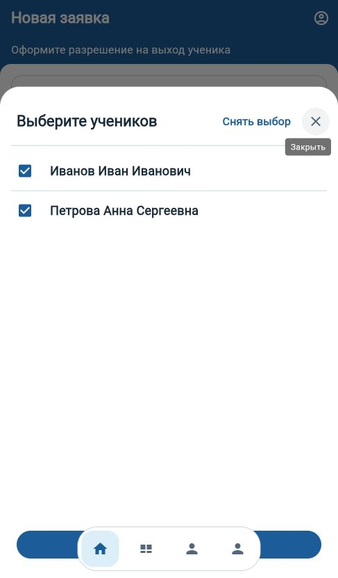
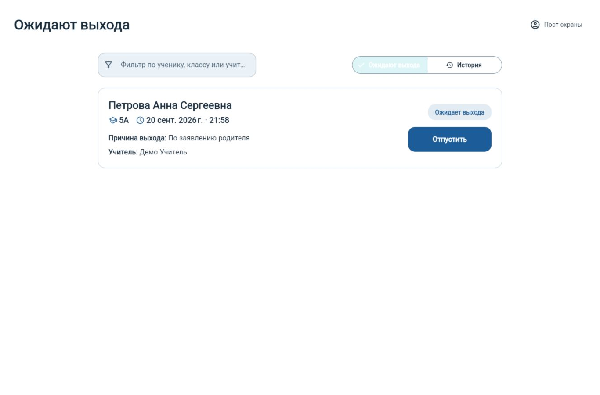
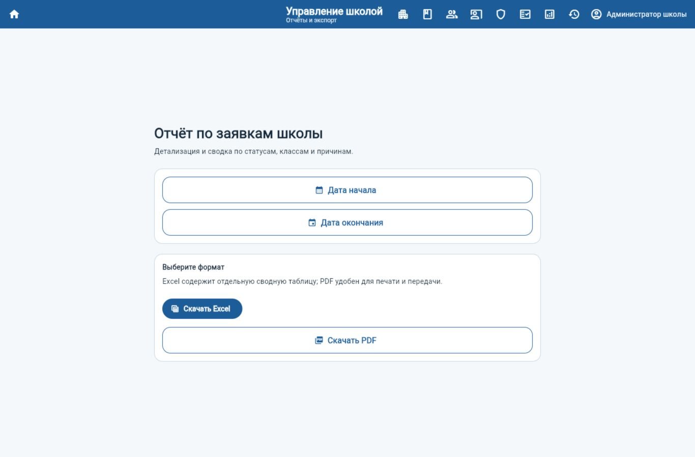

Учителю
Быстро выбрать класс и нескольких учеников, указать причину и время, следить за активными заявками и историей.
Цифровой сервис для школы
Учитель оформляет разрешение, охрана видит актуальную очередь, а администрация контролирует классы, корпуса и историю действий.
Задача
Сервис фиксирует, кто создал разрешение, какого ученика ожидают, в какое время и кто подтвердил выход. Сотрудники видят только доступные им данные своей школы и корпуса.
Преимущества
Быстро выбрать класс и нескольких учеников, указать причину и время, следить за активными заявками и историей.
Актуальная очередь с поиском и фильтрами, автоматическое обновление, одно действие для подтверждения выхода.
Корпуса, классы, ученики, учителя и охрана; массовая загрузка из Excel и отчёты по заявкам.
Создание школ и локальных администраторов, общий аудит и обзор работы всей системы.
Как работает
Интерфейс
Крупные элементы, адаптация под телефон и компьютер, полностью русские подписи и понятные состояния.




Форматы работы
AndroidПриложение для учителей и сотрудников. Выпуски распространяются через RuStore.
WebПолноценная адаптивная версия без установки.
Киоск охраныОблегчённый режим для Raspberry Pi и сенсорного экрана.
Безопасность
Ответы на вопросы
Для web-версии нет. Android-приложение можно установить через RuStore, а пост охраны может работать в киоск-режиме.
Да. Администратор школы выбирает корпус и класс, проверяет предварительный результат и загружает данные из Excel.
Нет. Сервис помогает исполнять и фиксировать утверждённый школой процесс, но не определяет правовые основания выхода ребёнка.
Интерфейс показывает понятную ошибку и повторяет безопасные запросы после восстановления связи. Подтверждение выхода требует связи с сервером.
Демонстрация
Откройте рабочую версию или свяжитесь с администратором проекта. Контакт берётся из публичной конфигурации и не зашит в приложение.